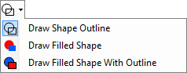
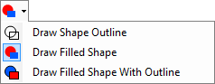
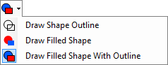

Shape Tools
The following tools are similar, and will be discussed in this topic:

- Rectangle
- Rounded Rectangle
- Ellipse
- Freeform Shape
Each of these tools may be configured using the controls in the Toolbar. To draw a shape, click and drag with the left mouse button. The primary color will be used for the outline (if applicable), and the secondary color will be used to fill the interior of the shape (if applicable). If "Draw Filled Shape" is selected, then the shape will be filled with the primary color. If you draw with the right mouse button, the roles of the primary and secondary colors will be reversed.
For the first three tools, you may hold down the Shift key to constrain the shape to be a square, rounded square, or a circle, respectively.
The following images show how shapes look when the appropriate shape-drawing option in the toolbar is selected:
Outline only:
-

-

Interior only:
-

-

Outline and Interior:
-

-

Copyright © 2007
Rick Brewster, Tom Jackson, and past contributors. Portions Copyright
© 2007 Microsoft Corporation. All Rights
Reserved.